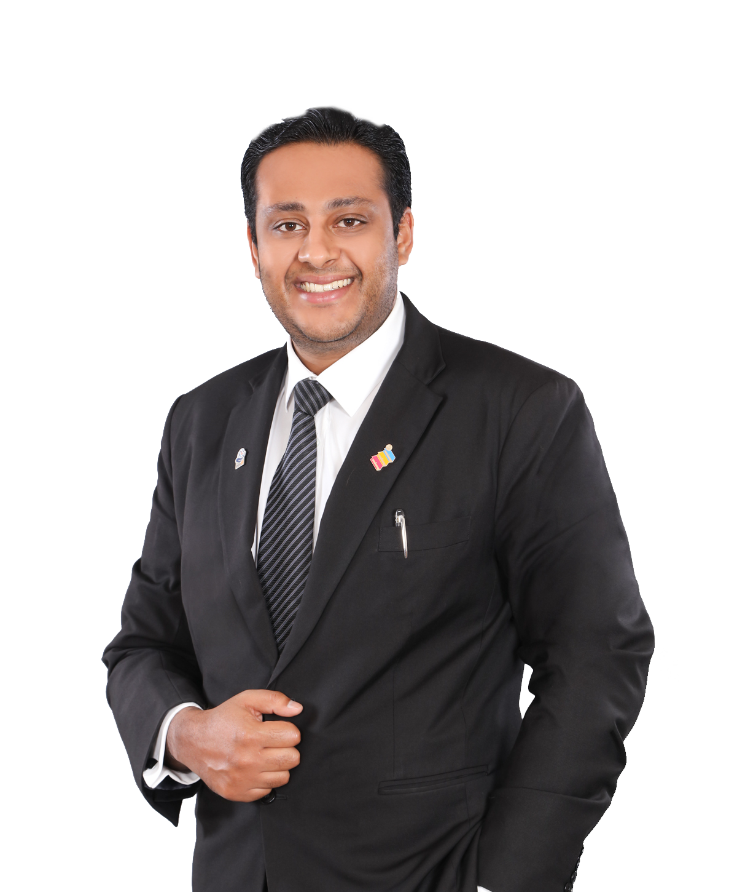

FOUNDERShankar Govinth
ADVOCATE & SOLICITORFounder of Messrs Shankar Govinth, with experience in civil, commercial and criminal litigation, and arbitration.
Read full profile
The firm of Messrs Shankar Govinth was established on the 1st of February 2021. Mr Shankar obtained his Law Degree with Honours from Aberystwyth University, Wales in 2010 and in 2013 completed his Certificate of Legal Practice. He commenced his pupillage at Zul Rafique & Partners and was called to the Malaysian Bar on 7.11.2014. He commenced practice thereafter.
Throughout his years of practice, he has assisted senior counsels on various trials and appeals at the appellate courts as well as arbitration proceedings. Mr Shankar has been exposed to a wide range of civil litigation, and in particular commercial and contractual disputes. Further, he has had conduct of criminal proceedings involving white collar offences and has conducted his own trials and hearings during his years of practice.
Mr Shankar is fluent in both the English and Malay language and is conversant in Mandarin and Tamil. He enjoys sports and travel and is an avid fan of Liverpool FC.